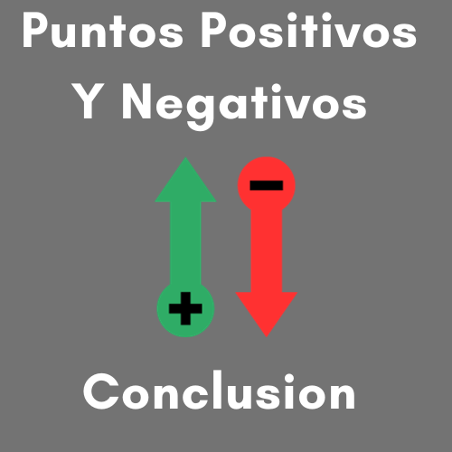
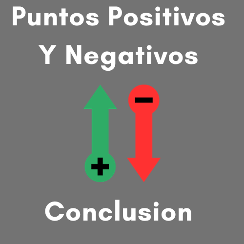
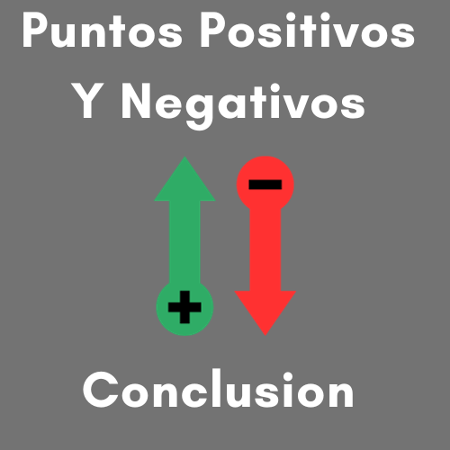

Iniciar Sesion
LOS INFLUENCERS
Que Son Los Influencers Y Ejemplos
 


Cualquier persona que aspire a convertirse en influencer de moda debe cumplir una serie de requisitos: Definir la imagen de sí mismo que quiere transmitir.
Debe tener un estilo propio, con personalidad, que lo diferencie del resto y que llame la atención entre los usuarios de las redes.
Cristiano Ronaldo es la mayor celebridad con la mayor cantidad de seguidores en instagram con un total de 610M, el segundo es Messi con 491M y el tercero es Selena Gomez con 430M